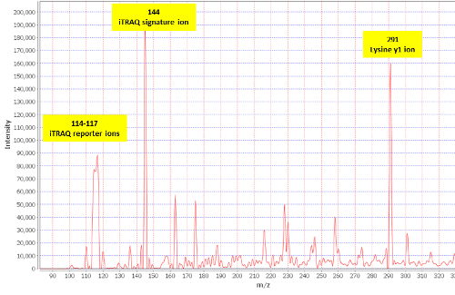

Explanation
This graph is obtained adding all the MS/MS spectra in the experiment. The result is an averaged spectrum. The highest peaks will reflect abundant and intense peaks in the overall set of MS/MS spectra. Most intense and ubiquitous peaks (both conditions needed) will be displayed here: contaminants, reagents used in the experiment, frequent fragmentations from highly common peptides…
The next chart shows an example of a public experiment in PRIDE, using iTRAQ reagents for quantitation. The zoom has been used to show in detail the highlighted information.
